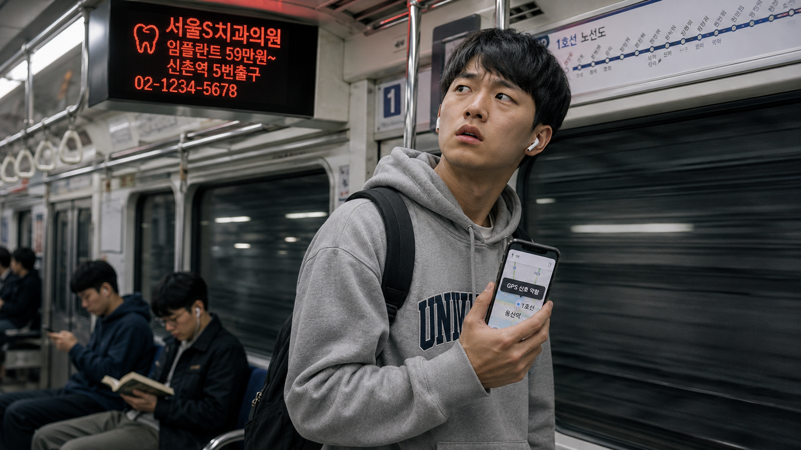
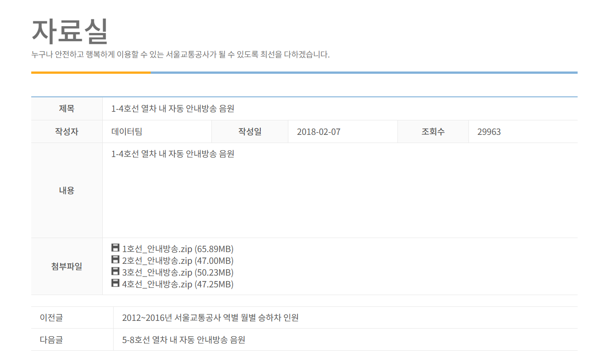
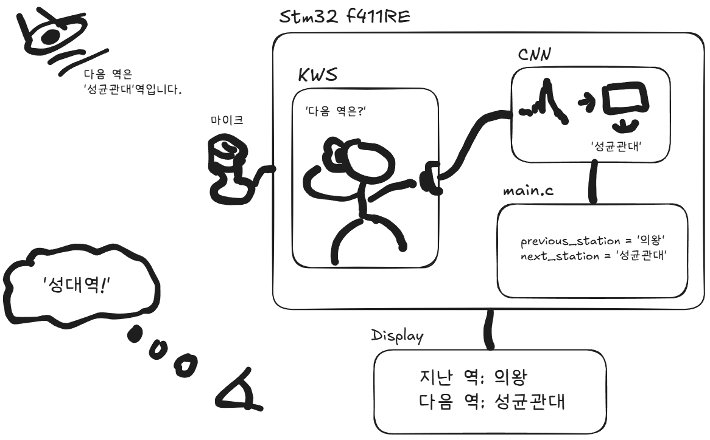

SIMULATION ONLY
시뮬레이션만
서울교통공사 안내방송 음원으로 학습하고, 같은 음원으로 시연.
한국어 안내
Clean signal
지하철 내 역 안내정보가 부족함
안내 방송에서 역 정보를 얻어
지나간 역 안내방송을 나 대신 들어주고,
현재 역 위치를 알려주는 임베디드 시스템

"이번 역은 ~" 이 들리면 0 / 1 출력으로 다음 단계 CNN을 Triggering
| ASR (전체 음성 인식) | KWS (Keyword Spotting) | |
|---|---|---|
| 목적 | 모든 발화를 텍스트로 | 정해진 단어/구간만 감지 |
| 모델 크기 | 수백 MB ~ GB | 수십 KB ~ 수 MB |
| 추론 지연 | 수백 ms ~ 초 | 수십 ms |
| 대표 예 | Whisper, Google STT | "헤이 시리", "오케이 구글" |
| 우리 사용 | ✗ STM32 한계 초과 | ✓ 정형 안내방송에 최적 |
서울교통공사 안내방송 음원으로 학습하고, 같은 음원으로 시연.
성균관대역 ~ N개 역에서 주변 노이즈가 포함된 음성을 수집해 학습 후, 실제 지하철 내 환경에서 시연 및 영상 제작.


차내 안내방송 "다음 역은 OO역입니다" 가 마이크로 들어오면, STM32 보드 안에서 KWS → CNN → 상태 갱신 → 디스플레이 순으로 처리됩니다.
previous_station · next_station 두 상태를 갱신합니다.
→ 사용자는 디스플레이에서 "지난 역 / 다음 역" 을 직접 확인할 수 있어 이어폰을 끼거나 청각장애가 있어도 자기 위치를 놓치지 않습니다.
I2S 16 kHz · "다음 역은 OO역입니다" 수신
"이번 역은 / 다음 역은" 트리거 검출 — ~5 KB
Spectrogram → 역 이름 분류 — ~50 KB
previous_station = '의왕'
next_station = '성균관대'
지난 역 / 다음 역을 큰 텍스트로 표시
감사합니다. 질문 부탁드립니다.